Ristorante tipico
Il nostro agriristoro è ospitato in una piccola veranda in legno, con ampie vetrate affacciate sulla campagna, sull’orto e sulle colline circostanti.
Qui potrete riscoprire una cucina genuina e casareccia, preparata con amore da Laura, utilizzando principalmente i prodotti del nostro orto e del territorio.
All’esterno sono disponibili piazzole immerse nel verde, ideali per godersi il pasto all’aria aperta, in totale tranquillità.
I nostri prodotti
La nostra cucina si basa su ingredienti semplici e genuini:
- Carni dell’azienda e di allevatori locali
- Ortaggi freschi del nostro orto
- Uova e marmellate di produzione aziendale
- Pasta fatta in casa
- Formaggi e ricotta di aziende vicine
Tutto rigorosamente a km 0.
Gallery
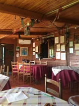
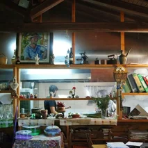
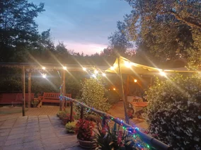
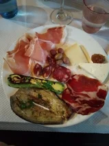
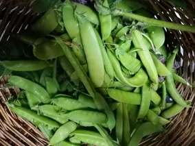
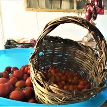
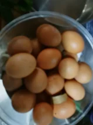
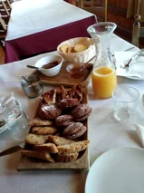
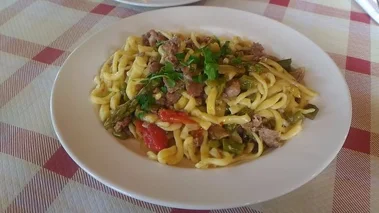
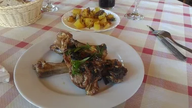
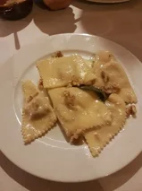
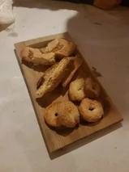
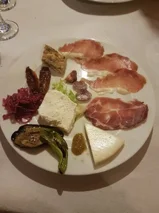
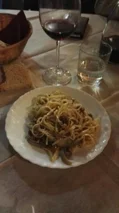
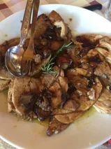
Menù
Proponiamo un menù alla carta, preparato quotidianamente in base ai prodotti freschi disponibili, oppure menù fissi giornalieri.
Menù fisso
- Antipasto misto ciociaro
- Scelta tra 2 primi fatti in casa
- Secondo misto con carni dell’azienda o locali
- Contorni
- Dolci fatti in casa
Prezzo: da 26 a 30 euro (bevande escluse)